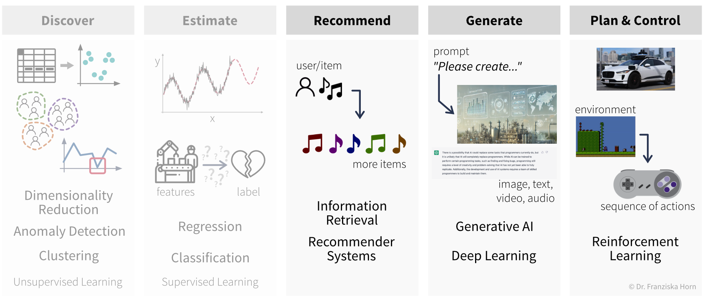
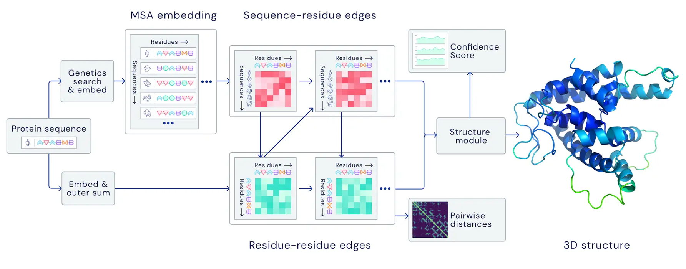
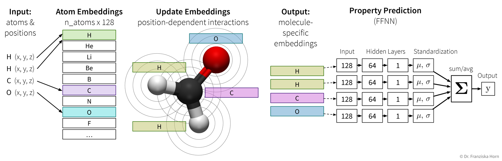
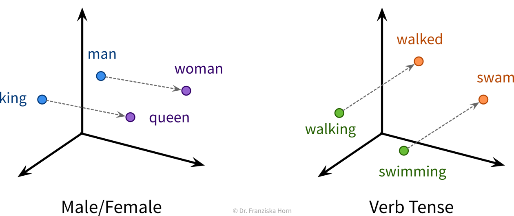
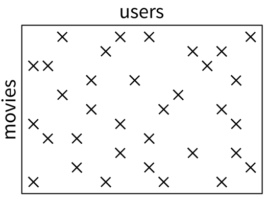
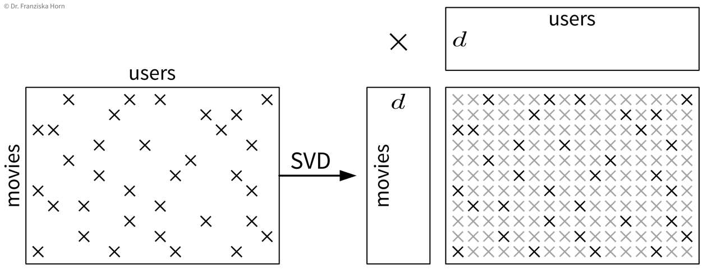
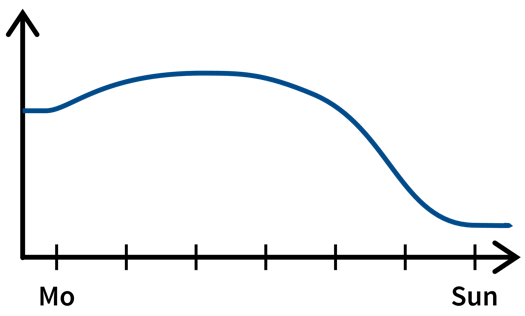
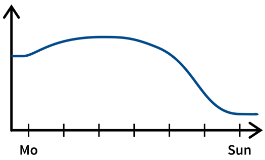

Advanced Topics
Now that we’ve discussed different unsupervised and supervised learning methods, we explore some other special-purpose methods, which can be used to solve somewhat less straightforward problems:

Deep Learning
We’ve already covered the general principles behind neural networks. Now we’ll have a look at more complex architectures to work with, for example, image or text data, as well as some advanced training techniques and special-purpose Python libraries for implementing custom neural network architectures.
If you want to learn more about deep learning, there are many great free resources available online, such as the introductory videos from 3blue1brown, which nicely illustrate what neural networks are actually computing and how backpropagation works; the Coursera Deep Learning Specialization (by Andrew Ng), which provides a good general introduction with many practical tips and also covers application areas like computer vision and NLP; or the Deep Learning with PyTorch course (by Yann LeCun), which is a bit more advanced and discusses state-of-the-art architectures.
Advanced NN architectures
Similar to how domain-specific feature engineering can result in vastly improved model performances, it pays off to construct a neural network architecture tailored to the task.
Recurrent Neural Network (RNN)
Recurrent neural networks are great for sequential data such as time series data or text (i.e., a sequence of words).
In its simplest form, a RNN is like a FFNN, but with additional recurrent connections \(W_h\) in the hidden layer to create a memory of the past:

It’s easiest when thinking about the RNN unrolled in time:

The original RNN layer uses a very simple update rule for the hidden state, but there also exist more advanced types of RNNs, like the Long Short Term Memory (LSTM) network or Gated Recurrent Units (GRU), which define more complex rules for how to combine the new input with the existing hidden state, i.e., they learn in more detail what to remember and which parts to forget, which can be beneficial when the data consists of longer sequences.
The cool thing about RNNs is that they can process input sequences of varying length (where one sequence represents one data point, e.g., a text document), whereas all methods that we’ve discussed so far always expected the feature vectors that represent one data point to have a fixed dimensionality. For RNNs, while the input at a single time step (i.e., \(\mathbf{x}_t\) with \(t \in \{1, ..., T\}\)) is also a feature vector of a fixed dimensionality, the sequences themselves do not need to be of the same length \(T\) (e.g., text documents can consist of different numbers of words). This comes in especially handy for time series analysis, as we’ll see in the next chapter.
Useful in Natural Language Processing (NLP):
RNNs can take word order into account, which is ignored in TF-IDF vectors
Convolutional Neural Network (CNN)
Manual feature engineering for computer vision tasks is incredibly difficult. While humans recognize a multitude of objects in images without effort, it is hard to describe why we can identify what we see, e.g., which features allow us to distinguish a cat from a small dog. Deep learning had its first breakthrough success in this field, because neural networks, in particular CNNs, manage to learn meaningful feature representations of visual information through a hierarchy of layers.
Convolutional neural networks are very well suited for processing visual information, because they can operate on the 2D images directly and do not need the input to be flattened into a vector. Furthermore, they utilize the fact that images are composed of a lot of local information (e.g., eyes, nose, and mouth are all localized components of a face).

Compared to the dense / fully-connected layers in FFNNs, which consist of one huge matrix mapping from one layer to the next, the filter patches used in convolutional layers are very small, i.e., there are less parameters that need to be learned. Furthermore, the fact that the filters are applied at every position in the image has a regularizing effect, since the filters need to be general enough capture relevant information in multiple areas of the images.
By the way, the edge filters typically learned in the first layer of a CNN nicely match the Gabor filters used in early computer vision feature engineering attempts. Combined with the subsequent pooling operation, they compute something similar as the simple and complex cells in the human primary visual cortex.
General Principles
When trying to solve a problem with a NN, always consider that the network needs to understand the inputs, as well as generate the desired outputs:

Below are two examples of neural network architectures that deal with somewhat unusual inputs and outputs and incorporate a lot of domain knowledge, which enables them to achieve state-of-the-art performance on the respective tasks:
Predicting the 3D structure of a protein from its amino acid sequence with AlphaFold

Predicting properties of molecules with SchNet (which is an example of a Graph Neural Network (GNN))

Self-Supervised & Transfer Learning
Self-supervised learning is a very powerful technique with which neural networks can learn meaningful feature representations from unlabeled data. Using this technique is cheap since, like in unsupervised learning, it does not require any labels generated by human annotators. Instead, pseudo-labels are generated from the inputs themselves by masking parts of it. For example, a network can be trained by giving it the first five words of a sentence as input and then asking it to predict what the next word should be. This way, the network learns some general statistics and knowledge about the world, similar to how human brains interpolate from the given information (e.g., with the blind spot test you can nicely observe how your brain predicts missing information from the given context). Self-supervised learning is often used to “pretrain” a neural network before using it on a supervised learning task (see transfer learning below).
NLP Example: Neural Network Language Models (e.g., word2vec → have a look at this blog article for more details) use self-supervised learning to generate word embeddings that capture semantic & syntactic relationships between the words (which is ignored in TF-IDF vectors, where each word dimension has the same distance to all other words):

⇒ These word embedding vectors can then be used as input to a RNN and are also utilized by large language models (LLMs).
If you want to learn more about LLMs, have a look at this great talk by Andrej Karpathy.
Transfer learning is the idea of using what a network has learned before on a different task (e.g., a self-supervised learning task) as a starting point when tackling a new task. In practice, this means the weights of our network are initialized with (some of) the weights of a network trained on another task, before training our network on the new task. We also say that the network was pretrained on a source task before it is fine-tuned on the target task.

Typically, not all the weights of a target network are initialized with weights from a source network, but only those from the earlier layers, where the source network has learned some general principles that are not task specific (e.g., observe how the first layer of the CNN in the previous section had learned to detect edges, which seems like a relevant skill for pretty much all computer vision tasks). Often, using a pretrained network will give us a more robust solution and boost the prediction performance, especially if we only have a very small dataset for the target task available to train the network. However, since when training a neural network we’re trying to find weights that minimize the loss function by iteratively improving the weights starting with some initialization, if this initialization is unfavorable because it is very far away from a good minimum (i.e., further away than a random initialization), e.g., because we’ve initialized the weights with those from a source network trained on a very different task, then this can hurt the performance, since the network first has to unlearn a lot of things from this unrelated task before it can learn the actual task. Therefore, transfer learning should only be used if the source and target tasks are “related enough”. Pretraining a network on a self-supervised learning task (i.e., a task that is just about understanding the world in general, not solving a different kind of specific task) usually works quite well though.
When using transfer learning, one question is whether to “freeze” the weights that were copied from the source network, i.e., to use the pretrained part of the network as a fixed feature extractor and only train the later layers that generate the final prediction. This is basically the same as first transforming the whole dataset once by pushing it through the first layers of a network trained on a similar task and then using these new feature representations to train a different model. While we often get good results when training a traditional model (e.g., a SVM) on these new feature representations, it is generally not recommended for neural networks. In some cases, we might want to keep the pretrained weights fixed for the first few epochs, but in most cases the performance will be best if all weights are eventually fine-tuned on the target task.
In cases where transfer learning is not beneficial, because the source and target tasks are not similar enough, it can nevertheless be helpful to copy the network architecture in general (i.e., number and shape of the hidden layers). Using an appropriate architecture is often more crucial than initializing the weights themselves.
Neural Networks in Python
There are several libraries available for working efficiently with neural networks (especially since many of the big firms doing machine learning decided to develop their own library): theano was the first major deep learning Python framework, developed by the MILA institute at the university of Montreal (founded by Yoshua Bengio), then came TensorFlow, developed by the Google Brain team, MXNet (pushed by Amazon), and finally PyTorch, developed by the Facebook/Meta AI Research team (lead by Yann LeCun). PyTorch is currently preferred by most ML researchers, while TensorFlow is still found in many (older) applications used in production.
Below you can find some example code for how to construct a neural network using PyTorch or Keras (which is a wrapper for TensorFlow to simplify model creation and training). Further details can be found in the example notebooks on GitHub, which also use the (Fashion) MNIST datasets described below to benchmark different architectures.
[Recommended:] torch library (→ to simplify model training, combine with skorch library!)
import torch
import torch.nn.functional as F
class MyNeuralNet(torch.nn.Module):
def __init__(self, n_in, n_hl1, n_hl2, n_out=10):
# neural networks are always a subclass of torch modules, which makes it possible
# to use backpropagation and gradient descent to learn the weights
# the call to the super() constructor is vital for this to work!
super(MyNeuralNet, self).__init__()
# initialize the layers of the network with random weights
# a Linear layer is the basic layer in a FFNN with a weight matrix,
# in this case with shape (n_in, n_hl1), and a bias vector
self.l1 = torch.nn.Linear(n_in, n_hl1) # maps from dimensionality n_in to n_hl1
# we need to make sure that the shape of the weights matches up
# with that from the previous layer
self.l2 = torch.nn.Linear(n_hl1, n_hl2)
self.lout = torch.nn.Linear(n_hl2, n_out)
def forward(self, x):
# this defines what the network is actually doing, i.e.,
# how the layers are connected to each other
# they are now applied in order to transform the input into the hidden layer representations
h = F.relu(self.l1(x)) # 784 → 512 [relu]
h = F.relu(self.l2(h)) # 512 → 256 [relu]
# and finally to predict the probabilities for the different classes
y = F.softmax(self.lout(h)) # 256 → 10 [softmax]
return y
# this initializes a new network
my_nn = MyNeuralNet(784, 512, 256)
# this calls the forward function on a batch of training samples
y_pred = my_nn(X_batch)
# (btw: using an object like a function also works for other classes if you implement a __call__ method)keras framework (which simplifies the construction and training of TensorFlow networks)
from tensorflow import keras
# construct a feed forward network:
# 784 → 512 [relu] → 256 [relu] → 10 [softmax]
model = keras.Sequential()
# we need to tell the first layer the shape of our input features
model.add(keras.layers.Dense(512, activation='relu', input_shape=(784,)))
# the following layers know their input shape from the previous layer
model.add(keras.layers.Dense(256, activation='relu'))
model.add(keras.layers.Dense(10, activation='softmax'))
# compile & train the model (for a classification task)
model.compile(loss=keras.losses.categorical_crossentropy,
optimizer=keras.optimizers.Adam(), metrics=['accuracy'])
model.fit(X, y)
# predict() gives probabilities for all classes; with argmax we get the actual labels
y_pred = np.argmax(model.predict(X_test), axis=1)
# evaluate the model (returns loss and whatever was specified for metrics in .compile())
print("The model is this good:", model.evaluate(X_test, y_test)[1])
# but of course we can also use the evaluation functions from sklearn
print("Equivalently:", accuracy_score(y_test, y_pred))Standard ML Benchmarking Datasets:
The MNIST handwritten digits dataset is very old and super easy even for traditional models.
→ \(28 \times 28\) pixel gray-scale images with 10 different classes:

The new MNIST dataset: Fashion
⇒ Same format (i.e., also 10 classes and images of the same shape), but more useful for benchmarks since the task is harder.

Information Retrieval (Similarity Search)
The goal of information retrieval is to identify similar items given some query:
This can be accomplished by building a nearest neighbors search tree (i.e., just like for the k-nearest neighbors algorithm, only that here we return the neighbors directly instead of using them to predict the label for the new data point).
from sklearn.neighbors import NearestNeighborsBut of course, the success of this approach is again highly dependent on being able to compute meaningful similarities between the data points. For text datasets, information retrieval often works quite well by using simple TF-IDF feature vectors together with a cosine similarity, however, for images, for example, out-of-the-box similarity measures that operate directly on the original input features (i.e., pixel values) are only able to identify images with similar colors, not necessarily similar content (e.g., an image showing a black cat would be more similar to an image showing a black dog than a white cat). To get around this problem, we could use neural networks to obtain a more informative feature representation, with which it is then easier to compute meaningful semantic similarities.
Recommender Systems (Pairwise Data)
Recommender systems can be found on many websites to promote products, content, or ads that a specific user might be interested in (e.g., on Amazon, Netflix, Facebook, YouTube, etc.).
What is special about them is that here we’re not really dealing with single data points, but instead with pairwise data, i.e., we have samples from two groups (e.g., users and movies), where each combination of samples (e.g., each (user, movie)-tuple) is assigned a label (e.g., the rating the user gave to the movie).
Typically, the training set contains only very few labels (e.g., since there are many users and many movies, but every user has only rated a handful of movies) and the task is to predict all the missing labels, based on which then, for example, a user would be recommended the movie with the highest predicted rating.
Recommender Systems Overview
Pairwise data:
- (user, movie) → rating (1 - 5 stars)
- (drug, protein) → bind (yes / no)
Idea: Similar users watch similar movies.
Given: Very sparse matrix with known interactions:

Task: Fill in the missing values.
There are lots of different approaches for how to accomplish this, and we’ll only look at two here, the traditional method of collaborative filtering, and a more modern approach relying on neural networks that falls under the category of triplet learning.
→ One possible Python library: surprise
Collaborative Filtering
Using a singular value decomposition (SVD; basically the big sister of the eigendecomposition, e.g., from scipy.sparse.linalg.svds), the matrix with the known interactions can be decomposed into two smaller matrices of shapes (number of movies \(\times\, d\)) and (\(d \,\times\) number of users) and by multiplying these matrices together, the missing values from the original matrix are approximated:

One big problem with this approach is that we always need some initial ratings for each user and movie, otherwise we can’t generate any useful personalized recommendations. This is also referred to as the “cold start problem”, which can be addressed with triplet learning.
Triplet Learning / Content-based Filtering
In triplet learning, we don’t directly work with the full matrix of known interactions, but instead the training dataset consists of triplets for the existing labels (e.g., (user i, movie j, 4 stars), which can also be a more memory-friendly representation). Additionally, we assume that we have feature vectors available for the users and movies (e.g., the users might have filled out a short survey when they set up an account and for the movies we know the genres, directors, and plot keywords; if all fails, this could also just be a one-hot encoding).
Given the two feature vectors of a user and a movie, we predict the interaction value directly:

→ Given the feature vector of a new user who has not rated any movies yet, we are now able to generate useful predictions.
Time Series Forecasting
In the chapter on data, where we discussed what can be considered ‘one data point’, you’ve already encountered some tasks that involve time series data. Now we’re looking into possibly the most difficult question that one can try to solve with time series data, namely predicting the future.
In time series forecasting, sometimes also called “predictive analytics”, the goal is to predict the future time course of a variable (i.e., its values for \(t' > t\)) from its past values (and possibly some additional information). This is, for example, used in Predictive Maintenance, where the remaining life span or degradation of important process components is forecast based on their past usage and possibly some future process conditions:

Predictive Maintenance Example Paper:
Bogojeski, M., et al. “Forecasting industrial aging processes with machine learning methods.” Computers and Chemical Engineering 144 (2021): 107123. (arXiv:2002.01768)
Input and Target Variables
Basically, we can think of time series forecasting as a supervised learning problem with more complicated inputs & outputs:

For example, let’s say we own a small cafe and want to predict how much ice cream we are likely to sell tomorrow. Certainly, the amount of ice cream we’ve sold yesterday or on the same day last week will be useful input features, but additionally, for example, the weather forecast for tomorrow or whether or not there is a holiday or some special event happening would be useful predictive information that should not be ignored and that can be used since these are independent variables.

We need a feature vector for every time point we want to make a prediction about. Think about what it is we’re trying to predict and what values could influence this target variable, i.e., what inputs are needed such that we have all the required information to make the prediction. Especially when using stateless models (see below), the feature vectors need to capture all the relevant information about the past.
Possible Input Features
- Known information about future (e.g., weather forecast, planned process conditions).
- Auto-regressive: Lagged (target) variable (i.e. values at \(t' \leq t\)).
❗️ Don’t use the predicted target value for this (in a multi-step forecast) – errors accumulate! - Account for cyclical (e.g., seasonal) trends → check auto-correlation or spectral analysis.
For example, a cafe might sell more ice cream during the summer or it could be located next to a school and therefore sell more on days the kids come by in their lunch break:
 

→ Include categorical variablesmonthandday_of_week. - For predictive maintenance: hours / integral of input variable since last maintenance event (maybe take log).

→ For more ideas: tsfresh library, time series analysis blog posts
Stateless vs. Stateful Models
When dealing with time series data, one should always think carefully about how complex the dependencies between the past and future process values in the respective forecasting task are.
For example, when trying to predict spontaneous events, like a sudden increase in the emissions produced in the process, then the relevant time window into the past, when the process conditions might have had an influence on this target variable, would be very short, i.e., only the process values from time \(t\) need to be included in the input feature vector to predict the anomalous event at time \(t+1\).
For other prediction tasks, what happened over a longer (but uniquely determined) interval might be relevant, but can be summarized with simple features. For example, in a production process, one might want to predict the quality of the final product that is produced within a fixed time interval. In this case, the process conditions during the time interval where the respective product is produced will be important for the prediction, but the process conditions during the time where the previous product was produced are most likely not relevant. Additionally, it would be enough to compute only some summary statistics (like mean/max/min values of the process conditions during the time interval of interest) and use these as input features to capture all the relevant information.
The third case are prediction tasks for which it is necessary to consider very long time windows, often of varying lengths, with some complex long-ranging dependencies between the process conditions at different time points. For example, in some predictive maintenance tasks, the decay of the critical process component might not happen in some linear fashion (unlike, for example, a light bulb, which might have some fixed life expectancy and one only needs to count the number of hours it was turned on up to now to estimate when it needs to be replaced). Instead, there exist more complex dependencies, for example, the component might decay faster if it is already in a poor state. Therefore, if some unfortunate combination of process conditions lead to a strain on the component early on, it might have to be replaced a lot sooner than under otherwise identical conditions without this initial mishap, i.e., the order of events matters a lot, too.
Depending on how complex the dependencies are between the process values over time, it will be more or less complicated to construct feature vectors that capture all the relevant information to make accurate predictions. In general, one should always try to come up with features that contain all the relevant information about the past, i.e., that fulfill the Markov assumption that given this information the future is otherwise independent of the history of the process: For example, if we knew the number of hours a light bulb was turned on up to now, we would have a complete picture about the state the light bulb is currently in; everything else that happened in the past, like how many people were in the room while the light was on, is irrelevant for the state of the light bulb. Another example is the current position of pieces on a chess board: To plan our next move, we don’t need to know the exact order in which the pieces were moved before, but only the position of all the pieces right now.
If we are able to derive such input features, we can use a stateless model for the prediction (e.g., any of the supervised learning models we’ve discussed so far except RNNs), i.e., treat all data points as independent regardless of where in time they occurred. If it is not possible to construct such an informative feature vector that captures all the relevant information about the past, e.g., because of complex long-ranging dependencies that can not be adequately captured by simple summary statistics, then we have to use a stateful model (e.g., a form of Recurrent Neural Network (RNN)), which internally constructs a full memory of the history of the process, i.e., it keeps track of the current state of the process.
Whether to use a stateless or stateful model is also an important consideration when dealing with other kinds of sequential data such as text. Analogous to the three scenarios described above, we can also find similar cases for natural language processing (NLP) problems that either benefit from the use of stateful models or where a simple stateless model is enough:
- Spontaneous event: Trigger word detection for smart speakers: A simple classification task for which only the last 1-2 spoken words, i.e., the audio signal from a time window of a few seconds, are relevant.
- Fixed interval & summary features: Text classification, e.g., determining the category of a newspaper article (e.g., ‘sports’ or ‘politics’): While here a longer span of text needs to be considered to make the prediction, a simple TF-IDF vector is usually sufficient to represent the contents of the whole document, since such categories can easily be identified by simply checking whether the terms “soccer” or “politician” occur more often in the current article. Furthermore, the span of text that is relevant for the task is fixed: we only need to consider the current article and it can be considered independent of the articles written before it.
- Complex long-ranging dependencies: For some tasks like sentiment analysis or machine translation, it doesn’t just matter which words occurred in a text, but also in which order and what their larger surrounding context was.
→ While for 1. and 2. a stateless model will do just fine, for 3. the best performance is achieved with a stateful model that can keep track of the more complex dependencies.
TL;DR: Which type of model should we use?
- How much does the future depend on the past?
- Values at \(t\) or simple summary statistics are sufficient as input features to predict \(t' > t\).
- There exist complex long-ranging dependencies between past and future values and the order of events matters.
- Values at \(t\) or simple summary statistics are sufficient as input features to predict \(t' > t\).
- How many time steps into the future do we need to predict?
- A fixed, small window of \(1\) or \(k\) steps.
- Arbitrarily long prediction horizons.
- A fixed, small window of \(1\) or \(k\) steps.
If only a):
→ Stateless model, e.g., linear model, FFNN, random forest, …
If any b):
→ Stateful model, e.g., recurrent neural network (RNN)
When working with time series data, the train, validation, and test data splits should always be in chronological order, i.e., the model is trained on the oldest time points and evaluated on more recent samples to get a realistic performance estimate, especially in cases where the data changes over time, e.g., due to smaller changes in the underlying process.
Output prediction with stateless models (e.g., linear regression, FFNN)
Only predict for a fixed time window of 1 or k steps:
Univariate, single-step prediction:
\[ [\underbrace{\quad y_1 \quad}_{t' \,\leq\, t} | \underbrace{\, x_1 \, | \, x_2 \, }_{t+1} ] \; \to \; [\underbrace{y_1}_{t+1}] \]
Multivariate, single-step prediction:
\[ [\underbrace{\quad y_1 \quad | \quad y_2 \quad}_{t' \,\leq\, t} | \underbrace{\, x_1 \, | \, x_2 \, }_{t+1} ] \; \to \; [\underbrace{\, y_1 \, | \, y_2 \, }_{t+1}] \]
Multivariate, multi-step prediction: \[ [\underbrace{\quad y_1 \quad | \quad y_2 \quad}_{t' \,\leq\, t} | \underbrace{\quad\quad x_1 \quad\quad | \quad\quad x_2 \quad\quad }_{t+1\, ...\, t+k} ] \; \to \; [\underbrace{\quad\quad y_1 \quad\quad | \quad\quad y_2 \quad\quad }_{t+1\, ...\, t+k}] \]
Output prediction with stateful models (e.g., RNN, LSTM, GRU, Echo State Network)
The model builds up a memory of the past by mirroring the actual process, i.e., even if we don’t need the prediction at some time step \(t-5\), we still need to feed the model the inputs from this time step so that it can build up the appropriate hidden state.
Multivariate, multi-step prediction:
\[ \begin{aligned} ...\\ t-1:\quad [\, x_1 \, | \, x_2 \,]\; &\to \; [\, y_1 \, | \, y_2 \,]\\ \text{memory state buildup} \quad\quad\quad\quad t:\quad [\, x_1 \, | \, x_2 \,]\; &\to \; [\, y_1 \, | \, y_2 \,]\\ ---------------------&------\\ \text{prediction} \quad\quad\quad\quad\quad t+1:\quad [\, x_1 \, | \, x_2 \,]\; &\to \; [\, y_1 \, | \, y_2 \,]\\ t+2:\quad [\, x_1 \, | \, x_2 \,]\; &\to \; [\, y_1 \, | \, y_2 \,]\\ ...\\ t+k:\quad [\, x_1 \, | \, x_2 \,]\; &\to \; [\, y_1 \, | \, y_2 \,] \end{aligned} \]
Reinforcement Learning
Finally, we come to the last main category of ML algorithms besides unsupervised and supervised learning: reinforcement learning.
Main idea:
Agent performs actions in some environment and learns their (state-specific) consequences by receiving rewards.
Goal: Maximize the cumulative reward (also called return), i.e., the sum of the immediate rewards received from the environment over all time steps in an episode (e.g., one level in a video game).
The difficult thing here is that sometimes an action might not result in a big immediate reward, but is still crucial for the agent’s long-term success (e.g., finding a key at the beginning of a level and the door for which we need the key comes much later). This means the agent needs to learn to perform an optimal sequence of actions from delayed labels.
The agent’s decision trajectory basically defines one path among a bunch of different possible parallel universes, which is then judged in the end by the collected return:
Reinforcement Learning vs. ‘normal’ Optimization
In regular mathematical optimization, we are given some fixed function \(f: \mathbb{R}^d \to \mathbb{R}\) and try to find the inputs \(\mathbf{x} \in \mathbb{R}^d\) that maximize (or minimize) the value of \(f(\mathbf{x})\). Since each evaluation of \(f(\mathbf{x})\) is independent of the next, we could theoretically try as many different values for \(\mathbf{x}\) as we wanted, until we’ve found some combination of inputs that results in an optimal value for \(f\).
If \(f\) is easily differentiable, the solution to the optimization problem can be found analytically by setting the first derivative of \(f\) to zero to obtain the local extrema or saddle points of \(f\), which can then be examined further to determine the (global) maximum or minimum. If \(f\) is not differentiable (or very complicated), there exist other methods to find optimal values (for example, the gradient descent procedure used to tune the weights of neural networks is one method for obtaining a (local) optimum without calculating the derivative of the network’s error function directly, while a naive grid search, where we just try many different input combinations and then select the values with the best outcome, or more fancy approaches such as particle swarm optimization, can also be applied to functions that are non-differentiable).
Translated to RL terms, \(f\) would be the environment in one particular state, \(\mathbf{x}\) would be the action, and \(f(\mathbf{x})\) would be the immediate reward as a result of taking this action in the current state. However, since in RL setups the state of the environment changes with each action that is taken, this means the function \(f\) also changes in each step and an action that might have resulted in a high reward in the previous step could now mean “game over”. Furthermore, in RL we’re not too concerned about every single immediate reward, but instead we want to achieve long-term success, measured by the return (i.e., cumulative rewards), and an action with a low immediate reward might still pay off later.
Immediate rewards vs. long-term value of states
To make decisions that are good in the long run, we’re more interested in what being in a state means w.r.t. reaching the final goal instead of receiving immediate rewards:
The value of a state \(s\) corresponds to the expected return \(G_t\) when starting from state \(s\):
\[ V^\pi(s) = \mathbb{E} [G_t | S_t = s] \]
The most naive way to calculate \(V^\pi(s)\) would be to let the agent start from this state several times (depending on how complex the environment is usually several thousand times), observe how each of the episodes play out, and then compute the average return that the agent had received in all these runs starting from state \(s\).
Similarly, we can calculate the expected return when executing action \(a\) in state \(s\): \[ Q^\pi(s, a) = \mathbb{E} [G_t | S_t = s, A_t = a] \]
I.e., here again we could let the agent start from the state \(s\) many times, but this time the first action it takes in this state is always \(a\).
Exploration/Exploitation trade-off
Of course, it would be very inefficient to always just randomly try out actions in any given state and thereby risk a lot of predictable “game over”. Instead, we want to balance exploration and exploitation to keep updating our knowledge about the environment, but at the same time also maximize the rewards collected along the way. This is again inspired by human behavior:
- Exploration: Learn something about the environment (e.g., try a new restaurant).
- Exploitation: Use the collected knowledge to maximize your reward (e.g., eat somewhere you know you like the food).
A very simple strategy to accomplish this is the Epsilon-Greedy Policy:
initialize eps = 1
for step in range(max_steps):
if random(0, 1) > eps:
pick best action (= exploitation)
else:
pick random action (= exploration)
reduce epsTabular RL: Q-Learning
This brings us to the simplest form of RL, tabular RL, where an agent has a finite set of actions to choose from and operates in an environment with a finite set of states (like the grid world from above). Here, we could simply compute the Q-value for each (state, action)-combination as described above, and save these values in a big table. This so-called Q-table then acts as a cheat sheet, since for each state the agent is in, it can just look up the Q-values for all of the available actions and then choose the action with the highest Q-value (when in exploitation-mode):
Function Approximation: Deep Q-Learning
Unfortunately, almost no practical RL application operates in an environment consisting of a finite set of discrete states (and sometimes even the agent’s actions are not discrete, e.g., the steering wheel positions in a self-driving car – but this goes too far here). In video games, for example, each frame is a new state and depending on the complexity of the game, no two frames might be exactly alike. This is where Deep Q-Learning comes in:
Given a state \(s\) (represented by a feature vector \(\mathbf{x}_s\)), predict the Q-value of each action \(a_1 ... a_k\) with a neural network:
This can be seen as a direct extension of the tabular Q-learning: If we represented our states as one-hot encoded vectors and used a linear network with a single weight matrix that consisted of the Q-table we had constructed before, by multiplying the one-hot encoded vector with the Q-table, the network would “predict” the row containing the Q-values for all actions in this state.
By using a more complex network together with meaningful feature representations for the states, deep Q-learning enables the agent to generalize to unseen states. However, just like in time series forecasting tasks, here again the feature representation of a state needs to include all the relevant information about the past, e.g., in video games (think: old pong game) the feature vector could contain the last four frames to additionally capture the direction of movement.
Pros:
- RL works well for games:
→ Environment = Game = Simulation (i.e., no discrepancy between “real world” and simulation model).
→ Well defined reward function.
→ Utilize “self-play” for multi-player games, i.e., two RL agents playing against each other.
Careful:
- Acting in the real world is too expensive → need accurate (simulation) model of the environment.
- AIs love to cheat and exploit bugs in the simulation.
- Difficult to design appropriate reward function (and RL will overfit it, resulting in unintended consequences).
- Model-free RL is very sample inefficient (i.e., needs millions of iterations, which takes too long in real-time).
- Agent is responsible for collecting its own experiences: bad policy ⇒ bad data ⇒ no improvement.
- Deep RL: complex network architectures, very sensitive to hyperparameter choices
⇒ Hard to train & get robust results → requires lots of tricks.
→ Imitation learning is often used instead of RL, which just means using supervised learning to train an agent to react similar to a human in some situation. Often, it is also easier to collect data from humans than to define a complicated reward function, e.g., humans drive around all the time, however, it is hard to define what would be considered “good driving” under lots of different circumstances. After the agent was pretrained on the human behavior, its policy can still be fine-tuned with an RL approach (e.g., this is how AlphaGo became better than a human Go master).
RL further reading + videos
General theory:
- Simple Blog Series
- Free RL course incl. programming examples
- Chapters 11+12 from the book Patterns, Predictions, and Actions
- Lectures by David Silver (from DeepMind)
- Stanford RL course (with video lectures)
- Book about RL (with lots of math)
Words of caution (recommended for everyone):
RL in action:
- Playing Super Mario
- Learning to walk
- Learning to drive a car
- Robot arm data collection (by Google)
- Playing video games with Layer-wise Relevance Propagation (LRP) to show the evolution of strategy